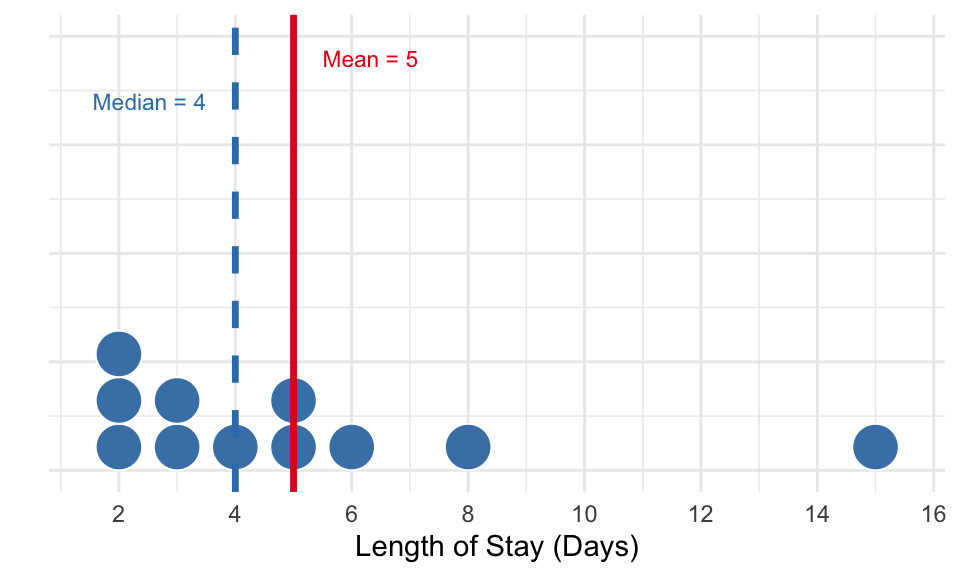
Basic Statistical Concepts
Week 03
2026-01-28
Today’s Agenda
- Part 1: Central Tendency & Dispersion
- Part 2: Scales of Measurement
- Part 3: Distribution Shapes
- Part 4: Introduction to Statistical Inference
Goal: Build the statistical foundation for data-driven healthcare decisions
Why Statistics Matter
Opening Scenario
Let’s think about this:
Imagine your hospital just collected satisfaction data from 500 patients across multiple departments. Each patient rated their experience on a 7-point scale (1 = very dissatisfied, 7 = very satisfied).
- Your task is to present these results to the board, but how?
You analyzed the data and presented the following:
- “Our average patient satisfaction score is 5.2 out of 7.”
- A board member asks: “Is that good? Should we celebrate or be concerned?”
You dig deeper and find:
- The Emergency Department scored 4.8 while Internal Medicine scored 5.1.
- Another board member asks: “So Internal Medicine is performing better than the Emergency Department?”
The Questions We Need to Answer
Understanding the Numbers
- Is summarizing 1-7 satisfaction ratings with an “average” even appropriate?
- What does “5.2 out of 7” really tell us?
- How spread out are individual scores?
Making Comparisons
- Is a 0.3-point difference (4.8 vs. 5.1) meaningful?
- Could it just be random chance?
- How confident can we be in our conclusions?
Today, we’ll cover the concepts you need to answer these questions!
Why Statistical Concepts Matter
As a healthcare manager, you make decisions daily that affect:
- Patient outcomes: Quality of care, safety, satisfaction
- Operational efficiency: Staffing, resource allocation, workflow
- Financial performance: Cost management, budget planning
- Strategic planning: Service line development, capacity planning
Learning Objectives
By the end of this session, you will be able to:
- Understand measures of central tendency and dispersion
- Identify the four scales of measurement and select appropriate statistics
- Recognize how distribution shapes affect statistical choices
- Understand confidence intervals and hypothesis testing basics
Part 1: Central Tendency & Dispersion
The Challenge of Summarizing Data
- Describing patient satisfaction by reading each score individually:
- “Patient 1 scored 2, Patient 2 scored 4, Patient 3 scored 6…”
With 1,000 patients, this provides too much detail to identify patterns!
A solution might be summarizing data with two key types of measures:
- Central tendency — Where is the “center”?
- Dispersion — How spread out is the data?
The Three Central Tendency Measures
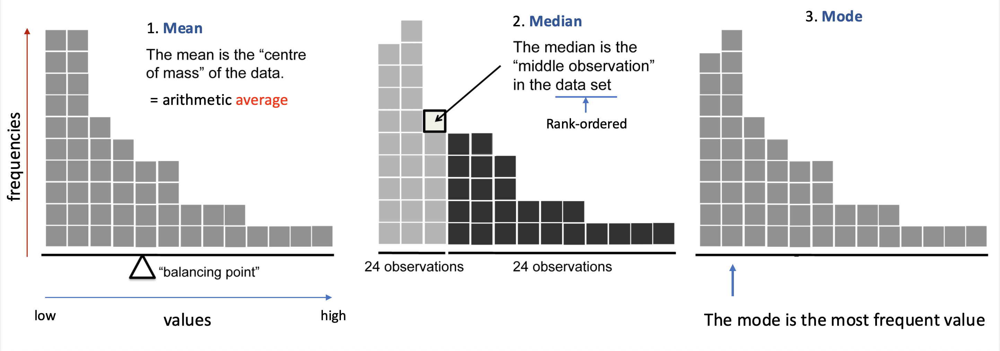
Example: Length of Stay (11 Patients)
Let’s assume that we have 11 patients with the following LOS data:
Patient LOS data: 2, 2, 2, 3, 3, 4, 5, 5, 6, 8, 15 days
Calculations:
- Mean:
- (2+2+2+3+3+4+5+5+6+8+15) / 11
- = 55 / 11 = 5 days
- Median: 6th value = 4 days
- Mode: 2 days (most frequent)
Why Dispersion Matters
Knowing the center isn’t enough. We also need to know how much variability exists.
Example: Two hospitals both have mean wait time = 45 minutes
Hospital A: 40-50 minutes
- Low variability
- Predictable
Hospital B: 10-120 minutes
- High variability
- Unpredictable
Which would provide a better patient experience? Which is easier to staff?
Measures of Dispersion
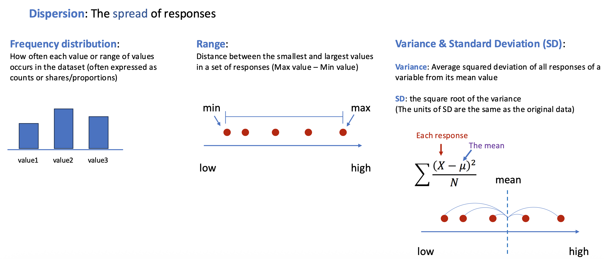
Note on Variance Calculation
For sample data, \(n-1\) is used instead of \(n\) to get an unbiased estimate. R’s sd() function uses \(n-1\).
Calculating Dispersion: Frequency & Range
Now let’s take a look at how we can calculate the dispersion measures using the same data points used for the central tendency measures.
Patient LOS data: 2, 2, 2, 3, 3, 4, 5, 5, 6, 8, 15 days (Mean = 5)
1. Frequency Distribution
| Days | Freq | Prop |
|---|---|---|
| 2 | 3 | 27% |
| 3 | 2 | 18% |
| 4 | 1 | 9% |
| 5 | 2 | 18% |
| 6 | 1 | 9% |
| 8 | 1 | 9% |
| 15 | 1 | 9% |
2. Range
- Max = 15, Min = 2
- Range = Max - Min = 15 - 2 = 13 days
Calculating Dispersion: Variance & SD
3. Variance & Standard Deviation
| LOS | Mean | Deviation | Squared Dev. |
|---|---|---|---|
| 2 | 5 | -3 | 9 |
| 2 | 5 | -3 | 9 |
| 2 | 5 | -3 | 9 |
| 3 | 5 | -2 | 4 |
| 3 | 5 | -2 | 4 |
| 4 | 5 | -1 | 1 |
| 5 | 5 | 0 | 0 |
| 5 | 5 | 0 | 0 |
| 6 | 5 | 1 | 1 |
| 8 | 5 | 3 | 9 |
| 15 | 5 | 10 | 100 |
| Sum | NA | 0 | 146 |
- Variance = Sum of Squared Dev / (n) = 146 / 11 = 13.27 days²
- Standard Deviation = \(\sqrt{\text{Variance}}\) = 3.64 days
Part 2: Scales of Measurement
Why Scales Matter
What are “Scales of Measurement”?
- It refers to how variables are defined and categorized. The scale determines the amount of information a variable contains.
Why do they matter?
- Not all statistics work with all types of data!
e.g.,): Measuring patient satisfaction
- 7-point scale (1 = very dissatisfied, 7 = very satisfied)
- Three categories (Low, Medium, High)
- Yes/No question (Satisfied or not)
Same concept, different data types → different statistics required!
The Four Measurement Scales
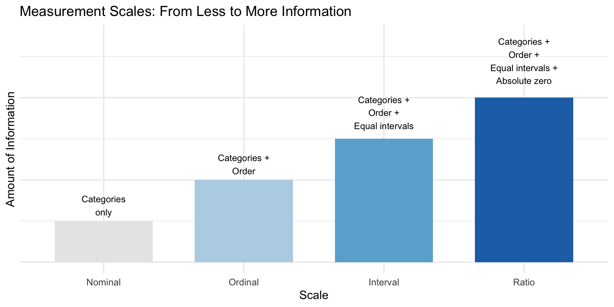
1. Nominal Scale
- Categories with NO inherent order of magnitude or degree
Examples:
- Insurance type: Private (1), Medicare (2), Medicaid (3)
- Department: Emergency (1), Surgery (2), Pediatrics (3)
- Blood type: A (1), B (2), AB (3), O (4)
- Even if coded as numbers (1, 2, 3, 4), you cannot calculate a meaningful mean!
Available Statistics:
- Central tendency: Mode
- Dispersion: Frequencies, percentages
2. Ordinal Scale
- Categories with order of magnitude or degree, but unequal intervals
Examples:
- Pain categories: None, Mild, Moderate, Severe
- Cancer staging: Stage I (localized) → II → III → IV (metastatic)
- Heart Failure Class: Class I (mild) → II → III → IV (severe)
- Age group: Young → Middle-aged → Elderly
- Cannot calculate meaningful mean! (gaps between categories are unknown)
Available Statistics:
- Central tendency: Mode, Median
- Dispersion: Frequencies, percentages, range
Why We Cannot Average Ordinal Data
Let’s think about this case: 100 patients rate post-operative pain
| Pain Level | Code | Patients |
|---|---|---|
| None | 1 | 20 |
| Mild | 2 | 30 |
| Moderate | 3 | 35 |
| Severe | 4 | 15 |
- If we calculate the mean of the above data, we get:
- Calculated mean: (20×1 + 30×2 + 35×3 + 15×4) / 100 = 2.45
What does 2.45 mean? 🤔
- If None→Mild might be a small jump, while Moderate→Severe might be huge (unbearable pain!)
- We can’t assume equal intervals!
- “2.45” says “between Mild and Moderate,” but actual pain could be closer to Severe!
3. Interval Scale
- Equal intervals between values, but no true zero
Examples:
- Temperature (°F, °C): 0° doesn’t mean “no temperature”
- Calendar year: Year 0 is arbitrary
- Numeric satisfaction scales: (e.g., 1-7, 1-10)
- Cannot make ratio statements: “40°C is NOT twice as hot as 20°C”
Available Statistics:
- Central tendency: Mode, Median, Mean
- Dispersion: Range, Variance, Standard Deviation
4. Ratio Scale
- Equal intervals + true zero (zero = absence)
Examples:
- Length of stay: 0 = no stay
- Wait time: 0 = no wait
- Total charges: $0 = no charges
- Physical measures: Age, weight, blood pressure
Available Statistics:
- All measures (mean, median, mode, SD, variance)
- Can make ratio statements: “LOS of 6 days is twice 3 days”
Quick Summary: Choosing Statistics
| Scale | Central Tendency | Dispersion | Healthcare Examples |
|---|---|---|---|
| Nominal | Mode | Freq, % | Diagnosis, Insurance |
| Ordinal | Mode, Median | Freq, %, Range | Pain category, Stage |
| Interval | Mode, Median, Mean | All + Var, SD | Satisfaction (1-7) |
| Ratio | All | All | LOS, Wait time, Cost |
👉 Quick Checkpoint ✓
- What scale is “Blood Type (A, B, AB, O)”? → Nominal
- What scale is “Pain level (Mild, Moderate, Severe)”? → Ordinal
- What scale is “Length of Stay in days”? → Ratio
- Can you calculate mean for ordinal data? → No!
- Why not? → Unequal intervals between categories
Part 3: Distribution Shapes
Why Distribution Shape Matters
Distribution: The pattern of how data values are spread across their possible range.
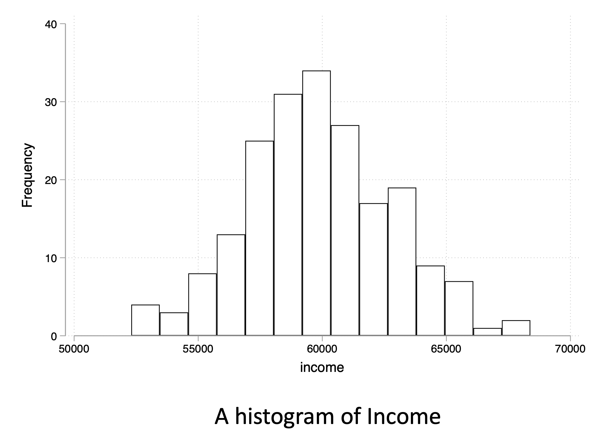
The shape affects which central tendency measure best represents the “typical” value (especially for interval and ratio data).
If a hospital administrator asks “What’s our typical patient length of stay?”
The answer depends on the distribution!
Data Distributions

Four Common Distribution Shapes
- Normal (Symmetric)
- Right or positive Skewed
- Left or negative Skewed
- Bimodal
1. Normal Distribution
Characteristics: Bell-shaped, symmetric, Mean ≈ Median
Example: Blood Pressure
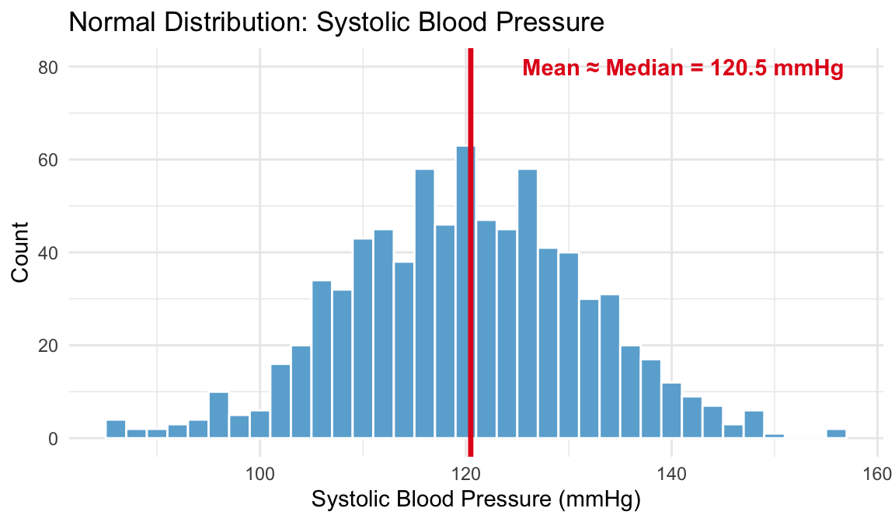
- Use Mean as central tendency.
- It accurately represents the balance point in symmetric data, and is widely known and used
The 68-95-99.7 Rule
For normally distributed data:
- 68% of values fall within ±1 SD of the mean
- 95% of values fall within ±2 SD of the mean
- 99.7% of values fall within ±3 SD of the mean
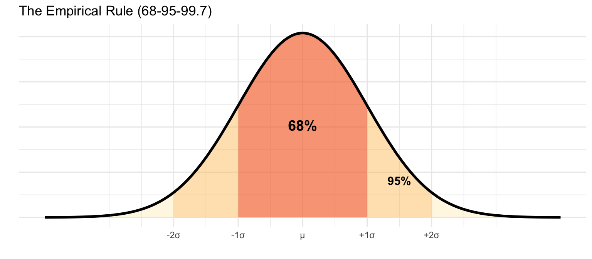
2. Right-Skewed Distribution
Characteristics: Tail to the right, Mean > Median
Example: Length of Stay
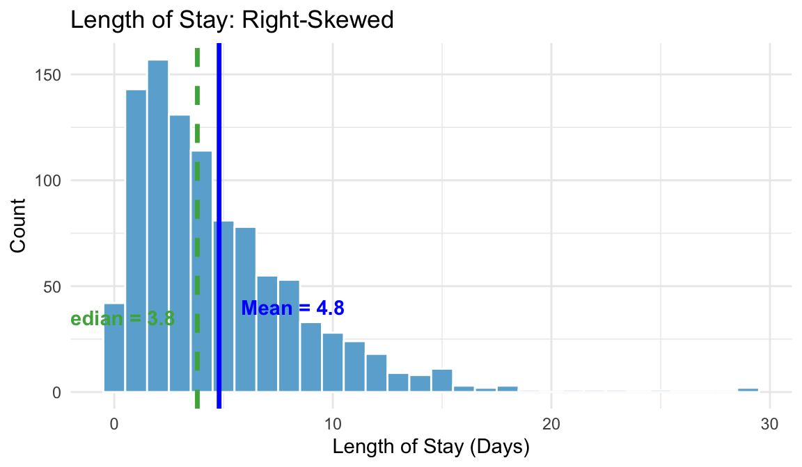
- Median would be more meaningful — not pulled by outliers
3. Left-Skewed Distribution
Characteristics: Tail to the left, Mean < Median
Example: Patient Satisfaction (0-100 scale)
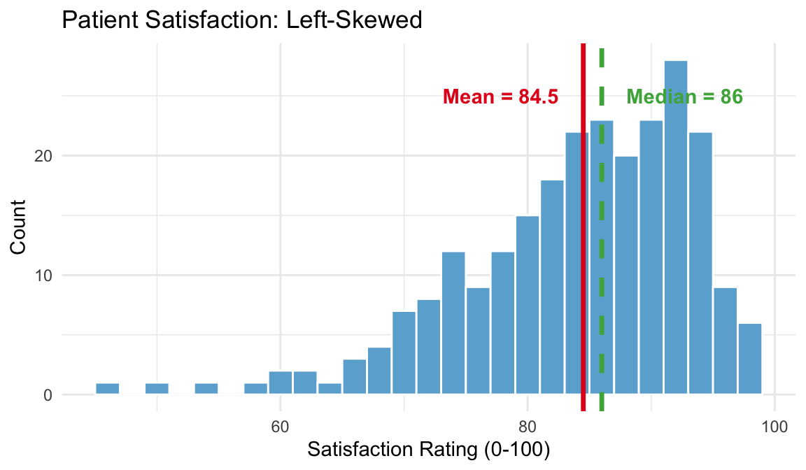
- Median would be more meaningful — not pulled by low outliers
4. Bimodal Distribution
Characteristics: Two peaks → Two subgroups!
Example: ED Wait Times by Shift
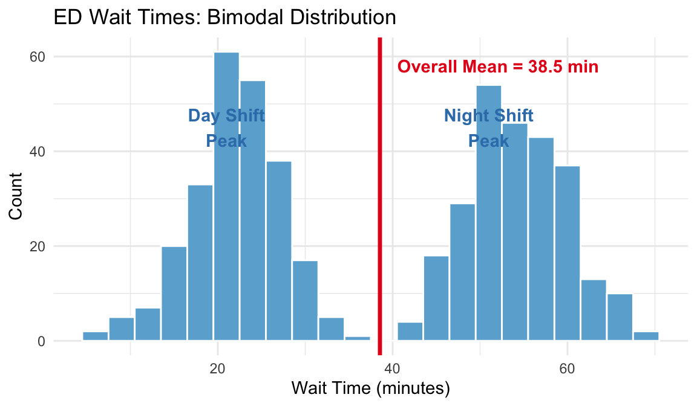
- The overall mean (38.5 min) or median (44 min) represents NEITHER group!
- It would be more informative to analyze each subgroup separately (e.g., report Day Shift and Night Shift statistics individually)
Decision Guide: Choosing Central Tendency
| Distribution Shape | Best Measure | Why |
|---|---|---|
| Normal | Mean | Represents balance point well |
| Right-skewed | Median | Not pulled by high outliers |
| Left-skewed | Median | Not pulled by low outliers |
| Bimodal | Analyze separately | Mean/median fall between peaks |
Practice: Descriptive Statistics in R
Central Tendency in R
Key Functions:
mean(): Returns the mean of a data vectormedian(): Returns the median of a data vectorMode(): Returns the mode (requiresDescToolspackage)
Dispersion in R
Key Functions:
table(): Calculates frequencies (counts)prop.table(): Calculates proportionsrange(): Returns the min and max valuesvar(): Calculates variance (uses n-1)sd(): Calculates standard deviation (uses n-1)
Quick Reference Summary
| Measure | R Function | Example | Note |
|---|---|---|---|
| Mean | mean(x) |
mean(los_data) |
|
| Median | median(x) |
median(los_data) |
|
| Mode | Mode(x) |
Mode(los_data) |
Requires DescTools |
| Frequencies | table(x) |
table(los_data) |
prop.table(table(x)) returns proportions |
| Range | range(x) |
range(los_data) |
diff(range(x)) returns single number |
| Variance | var(x) |
var(los_data) |
Uses n-1 |
| SD | sd(x) |
sd(los_data) |
Uses n-1 |
Part 4: Statistical Inference
From Description to Inference
So far we talked about descriptive statistics (summarizing data we have)
Now we will talk about inferential statistics (drawing conclusions about populations)
Let’s think about this healthcare research example:
- Is there a difference in patient satisfaction between departments?
- Sample: 200 patients we surveyed
- Department A = 85 vs. Department B = 80
- Population: All patients who visit our hospital
- Sample: 200 patients we surveyed
- Is the satisfaction difference between departments real or just random chance?
Let’s think about coin tossing
- If we toss a fair coin 10 times, how many heads would we expect?
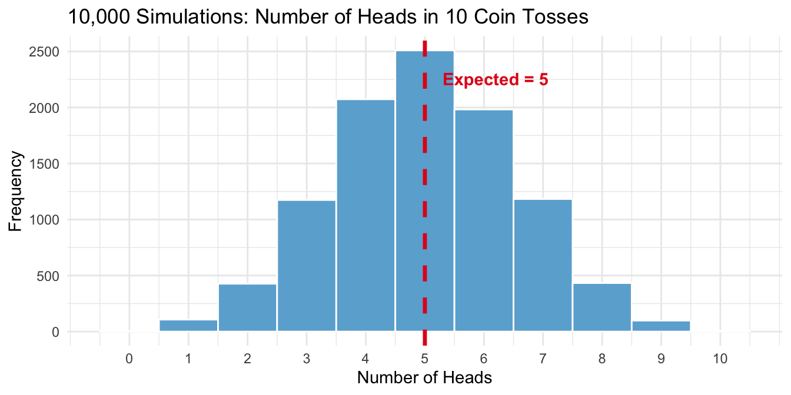
- Most results cluster around 5 heads (expected value)
- Getting 0 (6) or 10 heads (8) is rare, but possible!
- This is the essence of random chance
The Logic of Hypothesis Testing
- Assume there’s NO difference (Null Hypothesis, H₀)
- Calculate how likely our observed data would be under this assumption
- If very unlikely (p < 0.05) → Reject H₀ → Conclude there IS a difference
Think of it like a criminal trial:
- H₀: Defendant is innocent
- H₁: Defendant is guilty
- Evidence: Our data
- Standard of proof: p < 0.05 (like “beyond reasonable doubt”)
- If evidence strongly contradicts innocence → Reject H₀
Key Terminology: H₀ vs H₁
Null Hypothesis (H₀)
The “no effect” or “no difference” assumption
- H₀: Hospital A satisfaction = Hospital B satisfaction
- H₀: New process has no effect on readmissions
Alternative Hypothesis (Hₐ or H₁)
What we’re trying to find evidence for
- H₁: Hospital A satisfaction ≠ Hospital B satisfaction
- H₁: New process reduces readmissions
What is a p-value?
A p-value is a probability of observing data as extreme as what we observed, if H₀ were true
Small p-value (< 0.05)
- Data would be surprising if H₀ were true
- Evidence against H₀
- “Statistically significant”
Large p-value (≥ 0.05)
- Data wouldn’t be surprising if H₀ were true
- Not enough evidence against H₀
- “Not statistically significant”
Visualizing the Null Hypothesis
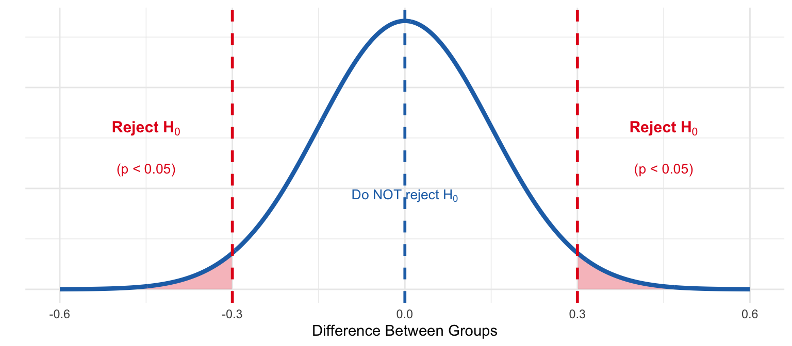
- Blue curve: Expected distribution if H₀ is true (no real difference; Null model)
- Red tails: Observed difference falls here → Reject H₀ (p < 0.05)
Common p-value Misconceptions
- “P-value is probability H₀ is true” ❌
- P-value assumes H₀ is true. It doesn’t tell us probability it’s true
- “p ≥ 0.05 means no difference” ❌
- Just means insufficient evidence (absence of evidence ≠ evidence of absence)
- “p < 0.05 means clinically or practicallyimportant” ❌
- Statistically significant ≠ Practically meaningful
Confidence Intervals
Hypothesis testing gives a Yes/No answer. Confidence intervals tell us how big the effect might be.
What is a CI?
- A range of plausible values for a population parameter
Example: Mean wait time = 45 min, 95% CI = [42, 48] min
- If we repeated this sampling many times, about 95% of those intervals would contain the true population mean [see here]
Key insight:
- Larger sample and lower variability → Narrower CI (more precise)
- Smaller sample or higher variability → Wider CI (less precise)
Calculating a Confidence Interval
Formula for 95% CI:
\[\text{CI} = \bar{x} \pm 2 \times \frac{s}{\sqrt{n}}\]
Where:
- \(\bar{x}\) = sample mean
- \(s\) = standard deviation
- \(n\) = sample size
- \(\frac{s}{\sqrt{n}}\) = Standard Error (SE): how much the sample mean varies
Example: 100 patients, mean wait = 45 min, SD = 15 min
\[45 \pm 2 \times \frac{15}{\sqrt{100}} = 45 \pm 3 = [42, 48] \text{ min}\]
Using CIs for Comparisons
Non-overlapping CIs:
- Hospital A satisfaction = 5.5 [CI: 5.2, 5.8]
- Hospital B satisfaction = 4.8 [CI: 4.5, 5.1]
- CIs don’t overlap → Strong evidence of a significant difference!
Overlapping CIs:
- Hospital C satisfaction = 5.2 [CI: 4.8, 5.6]
- Hospital D satisfaction = 4.9 [CI: 4.5, 5.3]
- CIs overlap → We can’t tell just by looking! Need a formal test.
Type I and Type II Errors
Type I (False Positive)
- Reject H₀ when it’s actually true
- e.g.,) Adopting ineffective treatment
- Probability = α (usually 0.05)
Type II (False Negative)
- Fail to reject H₀ when it’s falseee
- e.g.,) Missing an effective treatment
- Probability = β
Type I and Type II Errors
The 0.05 Threshold
Why p < 0.05?
- Popularized by Ronald Fisher in the 1920s
- It’s a convention, not a mathematical truth
- Represents 5% chance of Type I error (1 in 20)
When to use different thresholds:
- Stricter (0.01, 0.001): High-stakes decisions (drug approval)
- Looser (0.10): Exploratory research, practical considerations
For this course: We use 0.05 as the standard threshold
Summary
Key Takeaways
1. Central Tendency & Dispersion
- Mean, Median, Mode for center
- Range, Variance, SD for spread
- Both are important to understand the data
2. Measurement Scales
- The choice of descriptive statistics depends on the measurement scale
- Nominal → Mode, Frequencies, Proportions
- Ordinal → + Median, Range
- Interval/Ratio → + Mean, SD, Variance
Key Takeaways
3. Distribution Shape
- The choice of descriptive statistics depends on the distribution shape (for interval and ratio scale data)
- Normal → Use mean
- Skewed → Use median
- Bimodal → Analyze separately
4. Statistical Inference
- P-value: Probability of seeing the observed data (or more extreme) assuming H₀ is true
- CI: Range of plausible population values (larger n + lower variability = narrower)
- 0.05 threshold (Type I error rate) is convention, not law
- Statistical significance ≠ Clinical or practical significance
Resources
Further Reading:
- Seeing Theory: Frequentist Inference - Interactive visualizations
- StatQuest: P-values Explained - Video explanation
Next Week: Exploratory Data Analysis and Data Visualization in R
Questions?
Feel free to ask me anything you’re curious about!
Class Reflection Assignment is due by this Sunday at 11:59 PM
Week 3 | Basic Statistical Concepts